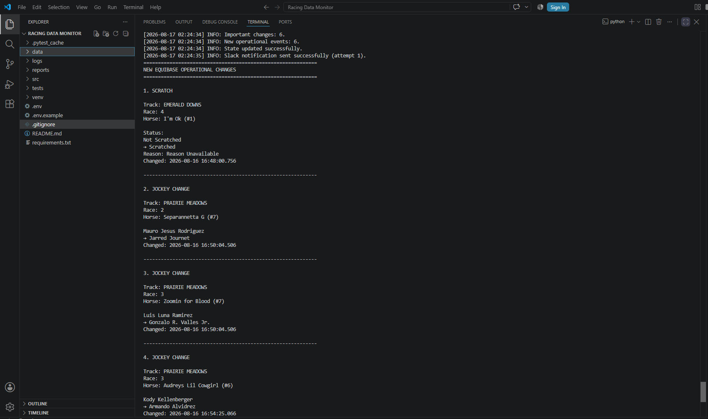
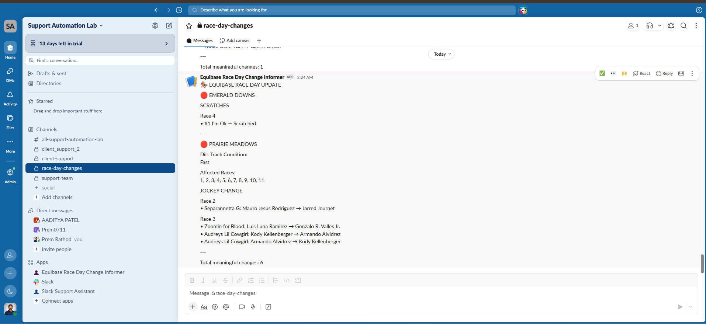

Problem
Race-day details change all day — nobody can watch the source continuously.
Scratches, jockey swaps, and track condition updates on Equibase happen throughout race day, often with little warning. Catching each one by manually re-checking the page means either checking constantly or missing changes until they're already stale. The system needs to watch the source on its own, work out which changes actually matter operationally, and surface only those — as a report and a Slack alert — instead of a wall of raw data.
What I Built
An automated pipeline from raw Equibase data to a Slack alert.
The project is organized into dedicated modules for data acquisition, parsing, change detection, reporting, and logging — its own data/, reports/, logs/, src/, and tests/ directories, plus a persisted state file so each run only surfaces what's actually new. At a high level:
How It Works
Each run moves through the same stages, in the same order.
Scroll into this section and each stage lights up in the order it actually runs.
Data acquisition & parsing. Each run pulls the current Equibase race-day XML and parses it into structured per-race, per-horse entries the rest of the pipeline can compare.
Change detection. The parsed snapshot is compared against a state file persisted from the previous run — the log from a real run shows this explicitly: "State updated successfully" after each pass, so the next run only sees what's genuinely new.
Filtering & grouping. Not every raw difference is worth a notification. In the same run, a track condition change at Prairie Meadows affected eleven races — the system grouped that into a single "Dirt Track Condition: Fast — Affected Races: 1–11" event rather than sending eleven near-duplicate alerts.
Reporting. Meaningful events are written out as a numbered operational report — track, race, horse, old value, new value, and a timestamp for each change — both to the terminal and to a persisted report file.
Notification. The report is delivered to a Slack channel via a dedicated app. The log line "Slack notification sent successfully (attempt 1)" shows delivery is tracked by attempt, not just fired and forgotten.
Real Run
An actual run, not a mockup — six operational events, start to finish.
DATA CHANGE → DETECTED EVENT → OPERATIONAL REPORT → SLACK NOTIFICATION. Below is the backend output and the resulting Slack message from the same run, on 2026-08-17.


Real run · 6 operational events detected and delivered to Slack
CHANGES DETECTED → SLACK NOTIFICATION SENT (ATTEMPT 1)
Types of Changes
Three categories of operational change, currently detected.
Based on the demonstrated run, the system currently recognizes these change types:
Scratch
A horse's status flips from "Not Scratched" to "Scratched" — the entry is withdrawn from the race, with a reason field if one is available.
Jockey Change
The rider assigned to a horse is swapped for another, tracked as an old-rider-to-new-rider change per horse and race. The same horse can change jockeys more than once in a single run.
Track Condition Change
The track surface condition changes (e.g. dirt to "Fast") and can apply across many races at once — the system groups this into a single event rather than one alert per affected race.
Status & Limitations
An honest read on where this stands.
This is a working, in-progress automation — not a finished product. Being upfront about what's built versus what isn't is intentional, since this is a portfolio.
Currently Working
- Race-day data monitoring & snapshotting
- Change detection against persisted prior state
- Filtering & grouping of operational events
- Report generation (terminal + report file)
- Slack notification with delivery-attempt tracking
- Automated tests
Not Yet Implemented
- Internal Site Compare — not yet implemented
What I Learned
Deciding what's "meaningful" is harder than detecting a change.
Raw diffs against a changing external data source are noisy — the real work is filtering and grouping them into events a human would actually want a Slack alert for, like collapsing eleven per-race track-condition diffs into one grouped notification instead of eleven near-identical ones. Persisting state between runs turned out to matter just as much as detection logic itself, since it's what keeps each run reporting only what's new rather than the entire dataset. And tracking notification delivery by attempt, rather than firing a message and moving on, was a small addition that makes the difference between "probably sent" and "confirmed sent."